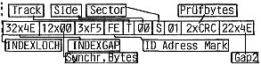
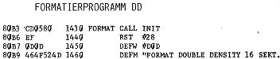

80-Bus Journal |
Dezember 1983 · Ausgabe 12 |
Das bedeutet, daß der Benutzer eines Rechners, der hardwaremäßig nur Single Density verarbeiten kann, zwar das Bootprogramm einlesen kann; wenn das Betriebssystem aber in doppelter Schreibdichte abgespeichert ist, mit diesem Bootprogramm nichts anfangen kann. In der Praxis: anstatt von vorne weg die Diskette nicht lesen zu können, gönnt man ihm das erfolgreiche Laden des Booters und läßt ihn dann um so frustrierter sitzen.
Für diesen minimalen Aufschub der Enttäuschung (die man sich sowieso ersparen könnte, wenn man weiß, daß die Diskette in DD formatiert ist) wird aber ein aufwendiges Formatierprogramm benötigt, das die erste Spur mit 128 Byte- Sektoren SD und den Rest in 256 Byte- Sektoren DD beschreibt, Der gleiche Aufwand muß beim Systemgenerieren (Sysgen), d.h. beim Abspeichern des Betriebssystems auf den ersten 4 Spuren getrieben werden.
Wir wollen aber doch möglicherweise mit mc-Computer Benutzern Programme tauschen, Wie ist das ohne diesen Programmieraufwand möglich?
Nun, die ersten 4 Spuren der Diskette interessieren beide Gruppen eigentlich garnicht, denn sie enthalten ja das Bootprogramm (wobei bei mc 15 Sektoren unbeschrieben und somit verschenkt sind), das von der Hardware abhängig ist (in erster Linie von der Controller-Karte) und das Betriebssystem, das als CP/M durch das BIOS ebenfalls hardwareabhängig ist und auf verschiedenen Rechnern nicht einfach ausgetauscht werden kann, Zudem wollen wir die Möglichkeit haben, auch CLD-DOS und Nassys zu laden (jetzt können wir ja „booten“ sagen), die wiederum an die Hardware angepaßt sein müssen.
So können wir den „Standard“ der ersten 4 Spuren vergessen, und wir legen nur fest, daß das Inhaltsverzeichnis auf Spur 4 Sektor 1 beginnt (wie bei mc) und die gleiche Länge hat. Damit haben wir mit den Hardwareorientierten Diskettenspuren nichts zu tun, können aber Files von der Diskette lesen, und unsere Files können gelesen werden.
Was man mit diesen Files dann anfangen kann, ist ein anderes Problem. Sind es CP/M-Programme, kann man auf alle Fälle damit arbeiten, auch Textfiles können gelesen werden.
Wie soll nun unser vereinfachtes Format aussehen?
Damit wir keine Konfusion mit der Sektorlänge bekommen, legen wir als Standard 256 Bytes pro Sektor fest. Damit bietet sich für Single Density das bereits in Heft 9/83 beschriebene Osborne-Format an. Als Formatierprogramm kann dabei weiter die Version aus Heft 10/11-83 dienen.
Da die Floppy-Karte ja nun auch mit DMA zum Laufen gebracht wurde (mehr dazu hoffentlich auch noch in diesem Heft), könnten aber alle Nachbauer (auch mit 2 MHz Systemtakt) mit Double Density arbeiten. Hier zunächst das mc-Format als Tabelle zum Vergleich mit den in Heft 9-83 Seite 8 veröffentlichten Formaten. Es entspricht weitestgehend dem IBM-Standard.
Ein Formatierprogramm das die mc-Norm benutzt, finden Sie im folgenden teilweise abgedruckt. Als Gerüst dazu dient das Programm aus Journal 10/11 Seite 16. Lediglich das Hauptprogramm „FORMAT“ und die Format-Tabelle wurden neu geschrieben.
Ab Zeile 2070 müßte das Listing mit „TSTOK“ fortgesetzt werden. In Zeile 2030 (des alten Listings) muß man „CP 16+1 ;16 Sektoren fertig?“ eintragen.
Das vollständige Assemblerlisting können auf unserer Sammeldiskette finden.
Ich wäre froh, wenn alle Nachbauer unserer Floppy-Karte das DD Format benützen würden, sonst muß beim Verschickenvon Software auf Diskette wieder zweispurig gefahren werden. Wir sollten genug Schwierigkeiten mit den Nascom 1 und 2 Cassettenformaten gehabt haben,
| Seite 14 von 28 |
|---|